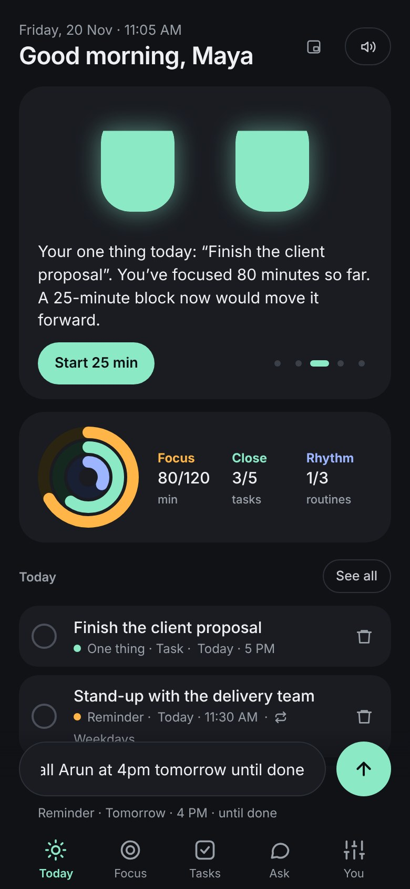
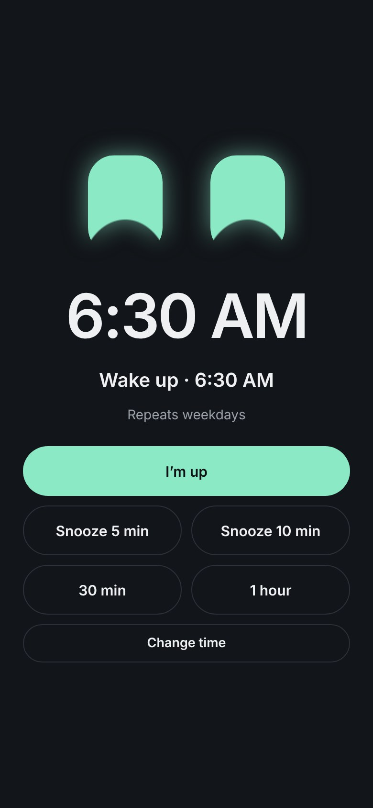
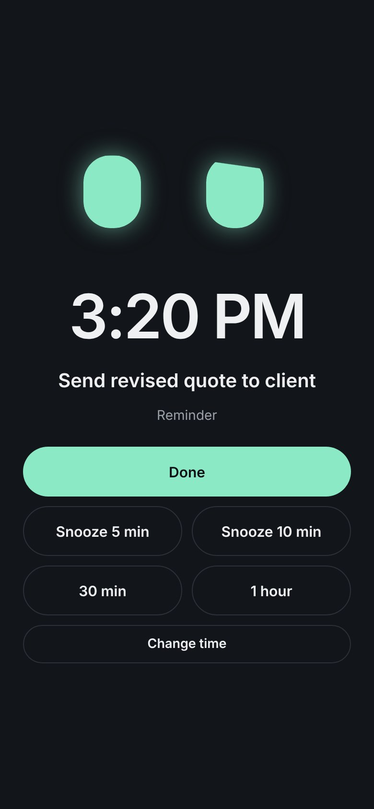
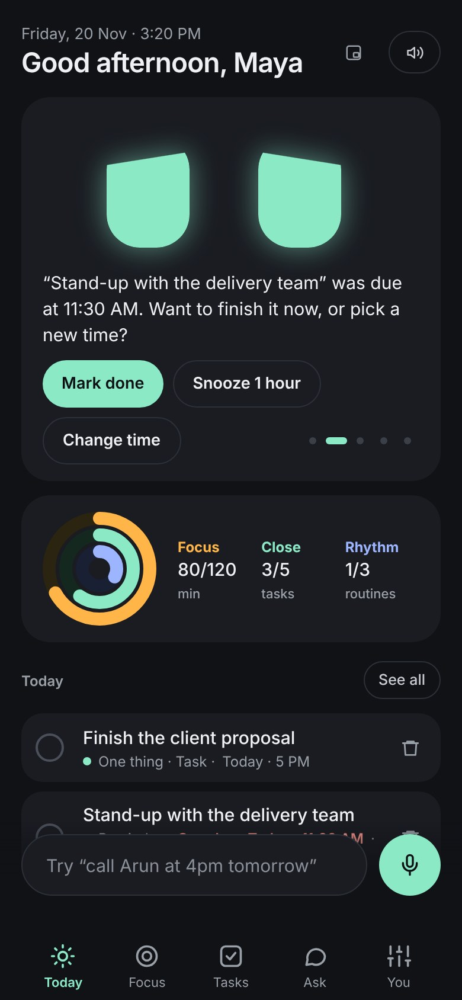
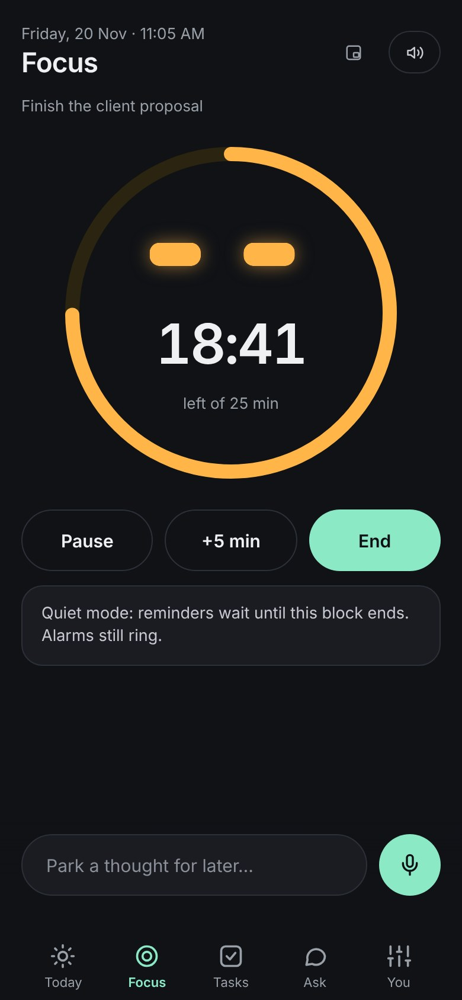
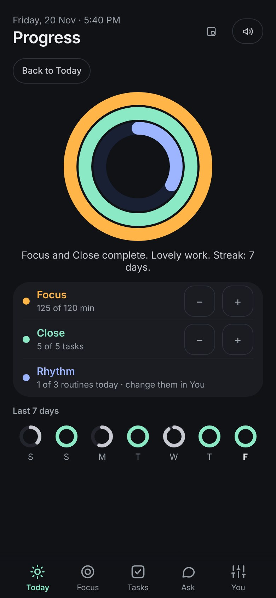
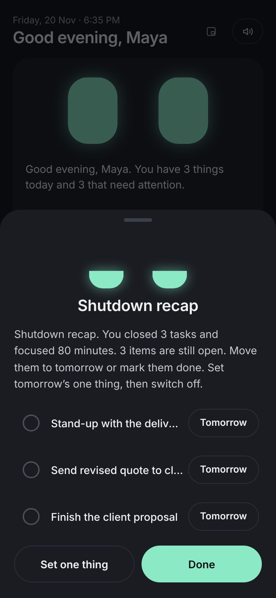
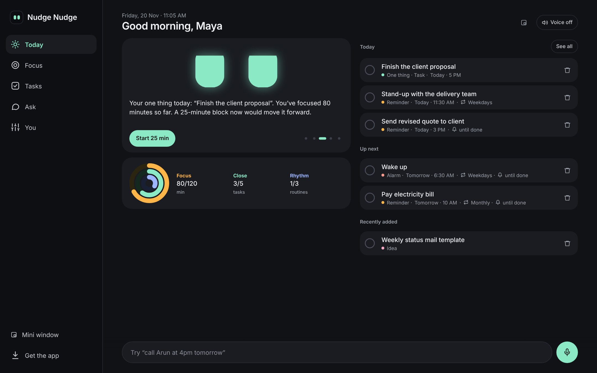
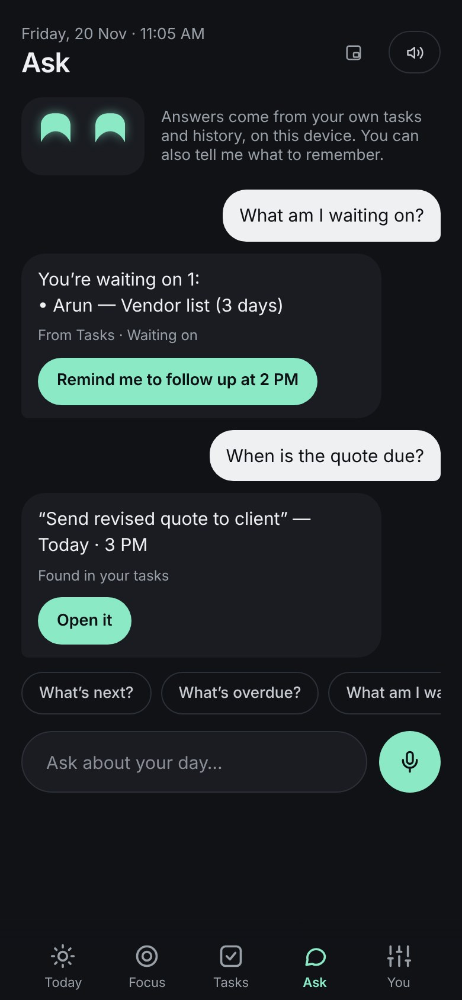

Tell it what to remember in plain words. It reminds you on time, out loud if you like, and keeps nudging until it’s done. Then it helps you focus on the one thing that matters today.
Phone, desktop and browser. No account. Your data stays on your device.
Reminders that don’t give up, an alarm that talks to you, focus blocks, and a companion that speaks up about what matters right now.
Download the videos: full demo · 30 seconds · vertical for Reels and Shorts
They answer questions. Nudge keeps track of your commitments and follows through on them with you.

Type or speak a sentence. Nudge works out the time, the date, whether it repeats and whether to keep reminding you, and shows you what it understood before you save.
wake me at 6:30 every weekdaypay rent on 1 Dec, keep remindingwaiting on Arun for the vendor listremind me in 20 minutes to stretch

Real notifications with Done and Snooze buttons, a ringing alarm that wakes you and says good morning by name, and “keep reminding every 5, 10 or 30 minutes until it’s done”. Choose to keep notifications on screen until you act.
Snooze for 5, 10 or 30 minutes, or an hour
Repeats daily, on weekdays, weekly or monthly

Its expression follows your day: concerned when something is overdue, attentive before a meeting, proud when you close tasks, sleepy when it’s time to wrap up. Every message comes with the next step, one tap away.
Turn on Voice and it reads them aloud.

Start a 15, 25, 50 or 90 minute block. Reminders hold until you’re done and anything you capture is parked for afterwards. When the block ends, you get a summary and your minutes count towards today’s Focus ring.


Focus minutes Tasks closed Routines kept
A morning brief, midday check-in, shutdown recap and weekly review keep your days tidy. Change the time, the days, or switch any of them off. Goals are yours to set.

The desktop app has a full layout with a sidebar, stays in the tray so reminders keep ringing, and can start with your computer.
Open the mini window for a small always-on-top face with your next reminder. Drag it anywhere and resize it to any size.

“What’s next?” “What’s overdue?” “What did I finish today?” “How was my week?” Answers come from your saved tasks and history, with a button for the next step.
Everything stays on your device. Export a backup file whenever you like, or save straight to a folder on your computer.
The phone and desktop apps ring alarms even when the app is closed or the screen is locked. The web app works anywhere, right now.
All downloads are also listed on the releases page.
In the phone and desktop apps, yes: alarms and reminders are scheduled with your device, so they ring even when the app is closed or the screen is locked. The web app can only remind you while it’s open in a tab or installed window, because browsers pause websites in the background. That’s why we recommend the app for alarms.
On your device. In the apps it’s kept in the app’s own storage. In the web app it’s kept in your browser, and on your second visit Nudge asks where you’d like it to live: a folder on your computer (Chrome and Edge), the app, or the browser. Clearing your browser’s site data removes browser storage, so export a backup file from time to time.
No. Open it, tell it your name, and start.
No. It only listens while you hold the microphone button. Voice typing uses your device’s speech service; some browsers need an internet connection for it.
Yes. Reminders, alarms, focus, rings, routines and the Ask answers all work without internet once the app is loaded.
Yes. Every routine has its own time, days and on/off switch. You can turn voice, sounds, vibration and sticky notifications on or off, and change your companion’s colour and eyes.
On Android, add the Nudge Nudge widget from your home screen’s Widgets list. On a computer, open the mini window: a small always-on-top face with your next reminder and today’s rings. Resize it to any size.
Yes. Tap the microphone, speak, and watch your words appear. Edit them if needed, then save. Voice typing works in the Android app and in Chrome, Edge and Safari. In the desktop app, use your keyboard’s dictation (Windows key + H, or press Fn twice on a Mac).
Yes. In You, choose Female or Male, pick a specific voice and set the speed. The voices come from your device, so the choice depends on which voices it has installed.
Apple only allows App Store apps on iPhone. Until then, add the web app to your Home Screen from Safari. It opens full-screen and works offline.